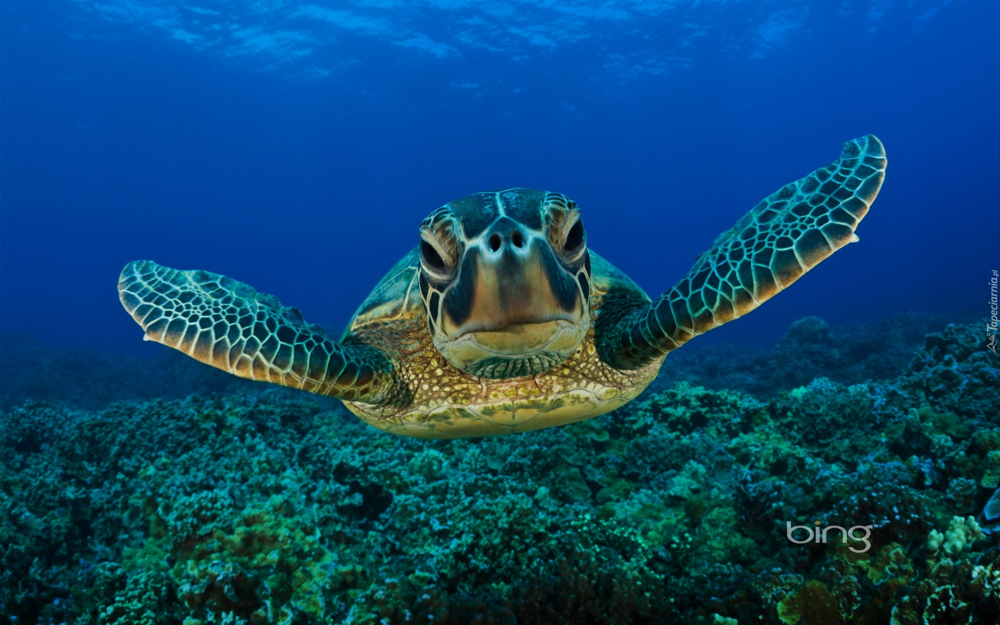

Żółw wodny
Żółwie wodne – podstawy hodowli
Żółwie wodne to bardzo popularne zwierzątka domowe
ale niestety, wiele z nich ginie na skutek braku jakichkolwiek lub posiadania błędnych informacji na temat opieki.
Ten artykuł streszcza podstawowe fakty, które musisz znać, aby trzymać te gatunki w dobrym zdrowiu.

Żywienie żółwi wodnych
Większość żółwi wodnych to zwierzęta raczej wszystkożerne niż wyłącznie mięsożerne,
zjadają zarówno pokarm pochodzenia zwierzęcego jak i materiał roślinny na wolności.
Ten wzór powinien być naśladowany w niewoli. Niektóre są zdecydowanie bardziej mięsożerne niż inne,
ale nawet mój żarłoczny żółw jaszczurowaty (Chelydra serpentina) czasem przedkłada rośliny nad swój zwyczajowy, mięsny jadłospis.
Jednakże we wszystkich wypadkach nie jest właściwe karmienie tylko komercyjnymi karmami dla żółwi,
które często mają bardzo niewielką wartość odżywczą i wykazują poważne niedobory błonnika,
witamin i minerałów. Także małe rybki stosowane jako przynęta nie powinny stanowić podstawy
diety, ponieważ są nadmiernie bogate w olej i mogą powodować zapalenie tkanki tłuszczowej (steatitis)
lub otłuszczenie wątroby. Diety zawierające nadmierną ilość ryb mogą także wywoływać niedobory witaminy B,
ponieważ w rybach występuje enzym zwany tiaminazą, który przeszkadza w pobieraniu witamin z grupy B.
Głównym czynnikiem, którego trzeba unikać w diecie jakichkolwiek żółwi wodnych trzymanych w niewoli, jest nadmierne zaufanie jednemu pokarmowi;
jest to błąd, który bardzo łatwo popełnić, ale zbilansowana i różnorodna dieta jest bezsprzecznie sprawą najważniejszą. Zapewnij jak najszerszy zakres
niżej wymienionych pokarmów. Warto także zauważyć, że płeć pewnych żółwi oddziałuje na preferowaną dietę; na przykład samice Graptemys geographica
mają znacznie szerszy otwór gębowy niż samce i dlatego są zdolne połknąć większą zdobycz. Podczas gdy samice tego gatunku karmimy przeważnie dużymi ślimakami i
innymi mięczakami, samce żywią się głównie wodnymi owadami i mniejszymi ślimakami.